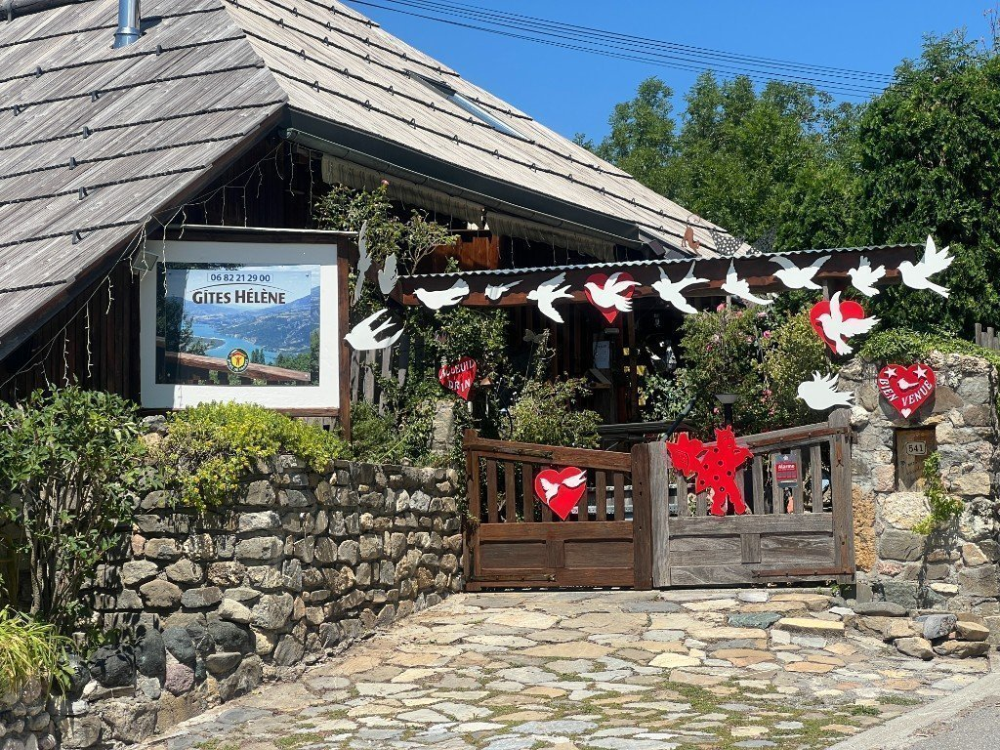
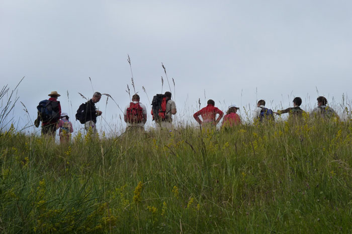
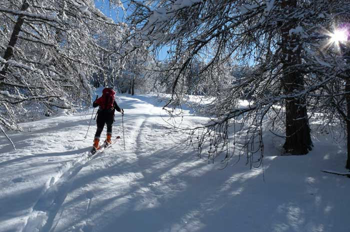
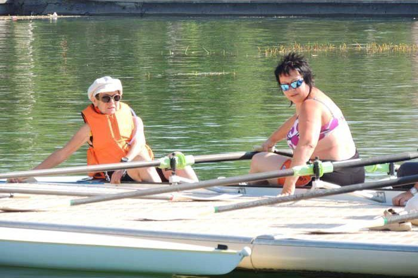

À la porte du gîte Hélène
Par sa position géographique panoramique, au cœur des Hautes-Alpes, loin du trafic et de la vie chaotique de la ville, le cadre se prête parfaitement à toutes les activités de plein air.
- Départ de plusieurs itinéraires : parcours balisés VTT, tour du lac de Serre-Ponçon, petite et grande balades
- Excursion le Méol — 1 100 m de dénivelé, Crévoux par le canal
- Départ de parapente

Activités nautiques
Lac de Serre-Ponçon
Lac classé n°1, 80 km de rives, plages surveillées et non surveillées. Baignade, voile, paddle, ski nautique…
Plan d'eau d'Embrun
Baignade, détente et activités au bord de l'eau, à proximité d'Embrun.
Ensoleillement
Embrun est réputé pour son ensoleillement exceptionnel — près de 360 jours de soleil par an.
Montagne & sports



VTT & cyclisme
Parcours balisés, cols mythiques, tour du lac. Base idéale pour vététistes et cyclistes.
Randonnée & ski de randonnée
Des Orres à Crévoux, en passant par St-Sauveur, Embrun et Savines-le-Lac. Raquettes en hiver.
Parapente & air
Départs de parapente à proximité. Sensations fortes au-dessus des lacs et des sommets.
Groupes & associations
Randonneurs, motards, triathlon, séminaires — salle en gestion libre pour 22 personnes.